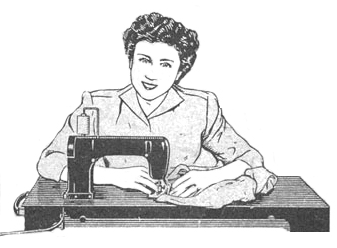
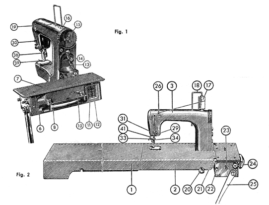
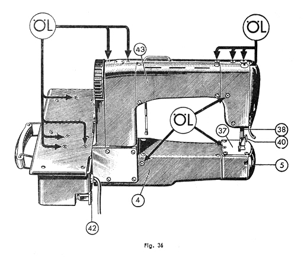

| GEBRAUCHSANWEISUNG FÜR
DIE ELEKTRISCHE KOFFERNÄHMASCHINE FREIA Teil Eins |
Mewa Freia Instruction Manual Part One |
| GEBRAUCHSANWEISUNG FÜR
DIE ELEKTRISCHE KOFFERNÄHMASCHINE FREIA |
MANUAL FOR THE FREIA PORTABLE ELECTRIC SEWING MACHINE |

| Einzelteilverzeichnis | Parts List | |
|
1. Kofferunterteil |
1. Case Bottom 2. Lid 3. Machine Body 4. Freearm 5. Flap 6. Motor Housing 7. Motor Lid 8. Handle 9. Slide Button 10. Stop Motion Lever 11. Light Switch 12. Motor Switch 13. Stitch Adjustment Lever 14. Stitch Length Screw 15. Balance Wheel 16. Spool Catch 17. Thread 18. Spool Pin 19. Spool Pin Hole 20. Button 21. Thread Guide on Case 22. Grooved Spindle 23. Bobbin Spindle 24. Speed Control Button 25. Knee Lever 26. Upper Thread Guide 27. Tension Disks (page 10) 28. Thread Take-up Spring (page 10) 29. Tension Nut 30. Thread Take-up Lever 31. Lower Thread Guide 32. Needle Bar (Page 9) 33. Needle Clamp Screw 34. Needle Clamp Thread Guide 35. Needle Clamp 36. Needle 37. Throat Plate 38. Presser Foot Bar 39. Presser Foot 40. Screw for Presser Foot 41. Presser Foot Lifter 42. Rest Lever 43. Reflector 44. Light Bulb (page 6) 45. Socket (page 6) 46. Bobbin Case (page 8) 47. Latch (page 8) 48. Bobbin (page 8) 49. Bobbin Tension Screw (page 8) 51. Tension Spring (page 8) 53. Quilt Guide (page 19) 54. Quilt Guide Screw (page 19) 55. Feed Dog Cover (page 20) 56. Darning Foot (page 20) 57. Darning Bar (page 20) 58. Screw for Seam Guide (page 22) 59. Seam Guide (page 22) 60. Bobbin Case Holder (page 8) 61. Shuttle Screw (page 26) 62. Shuttle Race Cover (page 27) 63. Shuttle (page 27) 64. Case Support (page 3) |

